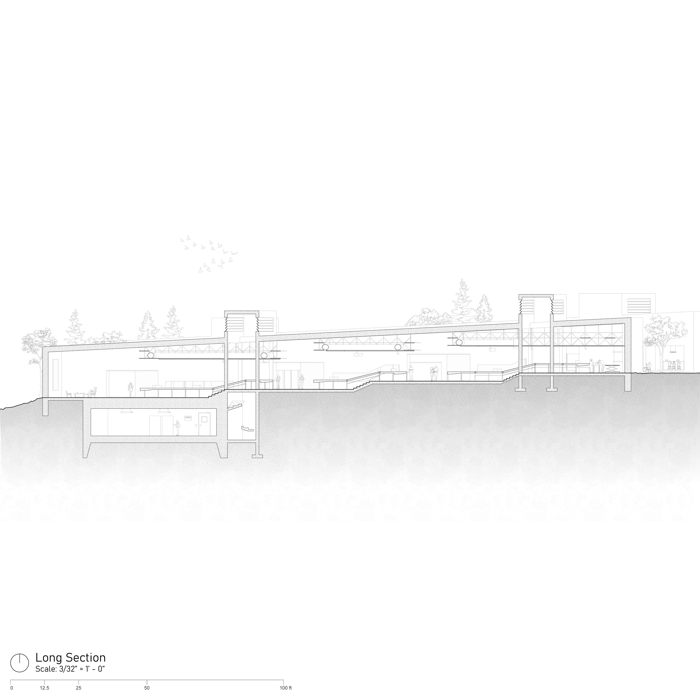
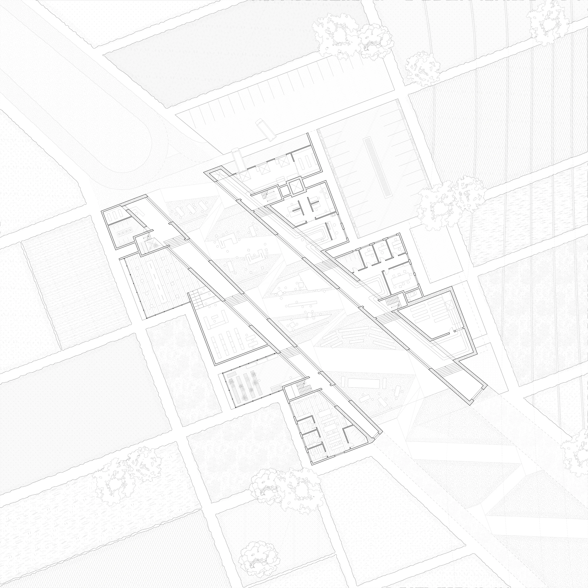
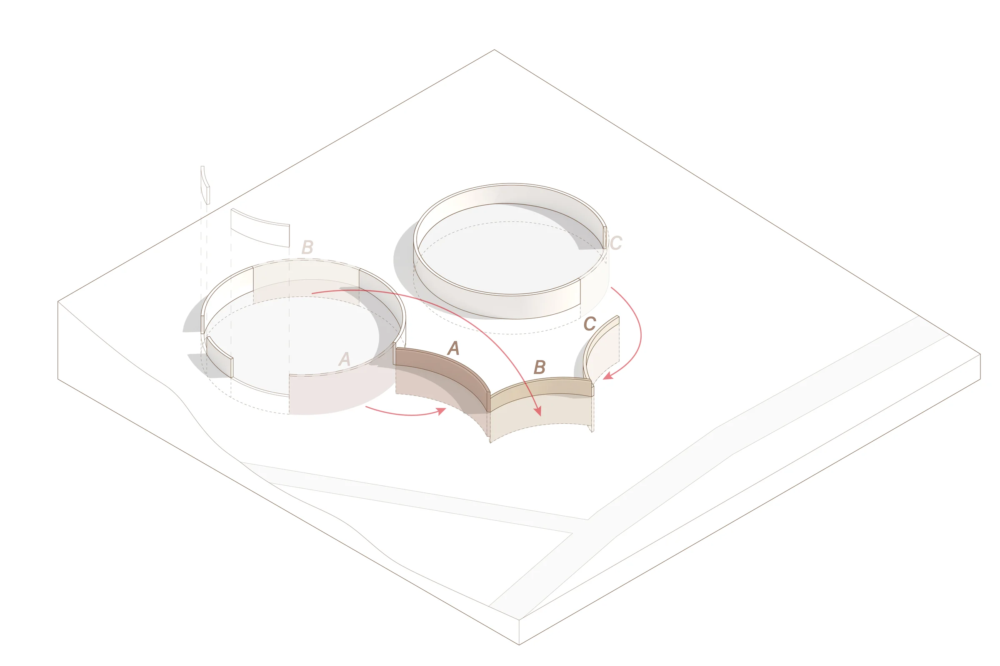
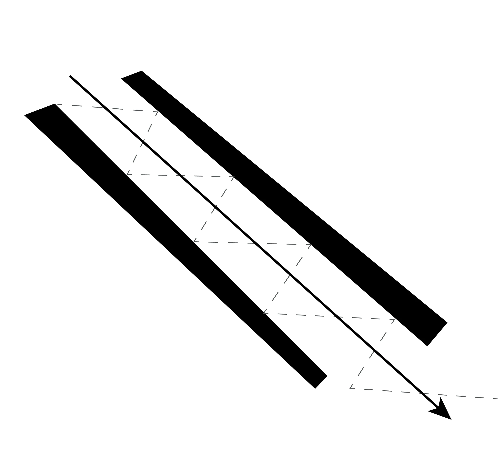
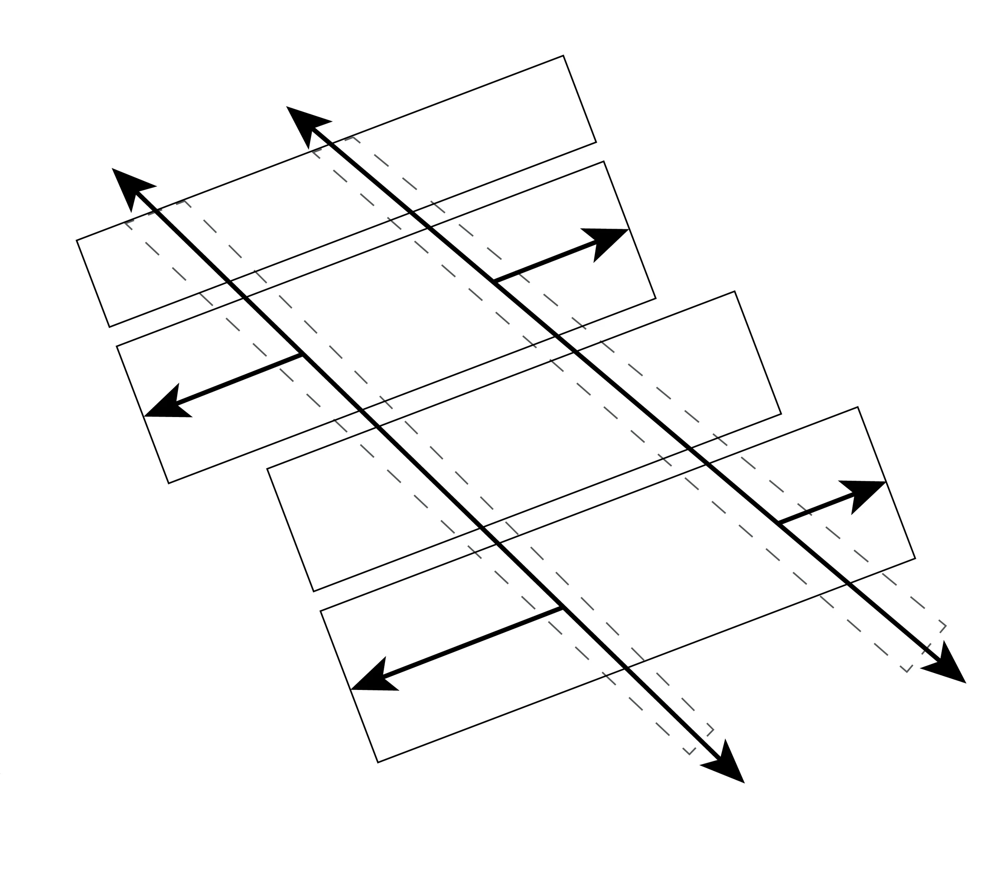
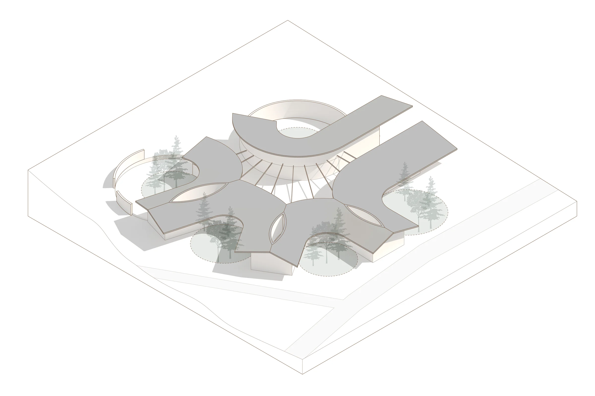

The first answer is rarely the real question.
PORTFOLIO / 2026
SELECTED PRACTICE
How do wedesign whatpeople truly need?
Solve what matters.
00.2 / VISUAL FIELDSelected fragments
Drag to explore ↔











00.5 / INTRODUCTION
ZIHE HUANG
Drag the pieces · pull the thread
Hello, I’m Zihe.
Born in Shenzhen, China.
Studying architecture and HCI @ Carnegie Mellon University.
ABOUT ME / CHRONOLOGYTrace the path01 / PROFESSIONAL LENS
CHOOSE A WAY IN
One practice.
Two ways to read the work.
My foundation stays the same. Choose the perspective that matters most to you; you can switch at any point.
Select one lens to continue